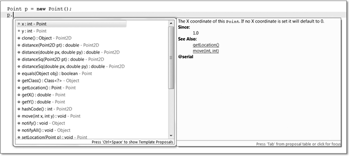
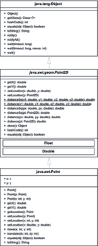

3.4 Neue Objekte erzeugen
Eine Klasse beschreibt also, wie ein Objekt aussehen soll. In einer Mengen- beziehungsweise Element-Beziehung ausgedrückt, entsprechen Objekte den Elementen und Klassen den Mengen, in denen die Objekte als Elemente enthalten sind. Diese Objekte haben Eigenschaften, die sich nutzen lassen. Wenn ein Punkt Koordinaten repräsentiert, wird es Möglichkeiten geben, diese Zustände zu erfragen und zu ändern.
Im Folgenden wollen wir untersuchen, wie sich von der Klasse Point zur Laufzeit Exemplare erzeugen lassen und wie der Zugriff auf die Eigenschaften der Point-Objekte aussieht.
3.4.1 Ein Exemplar einer Klasse mit dem new-Operator anlegen
Objekte müssen in Java immer ausdrücklich erzeugt werden. Dazu definiert die Sprache den new-Operator.
| Beispiel |
|
Anlegen eines Punkt-Objekts: new java.awt.Point(); |
Hinter dem new-Operator folgt der Name der Klasse, von der ein Exemplar erzeugt werden soll. Der Klassenname ist hier voll qualifiziert angegeben, da sich Point in einem Paket java.awt befindet. (Ein Paket ist eine Gruppe zusammengehöriger Klassen. Wir werden später bei den import-Deklarationen sehen, dass Entwickler diese Schreibweise auch abkürzen können.) Hinter dem Klassennamen folgt ein Paar runder Klammern für den Konstruktoraufruf. Dieser ist eine Art Methodenaufruf, über den sich Werte für die Initialisierung des frischen Objekts übergeben lassen.
Konnte die Speicherverwaltung von Java für das anzulegende Objekt freien Speicher reservieren und konnte der Konstruktor gültig durchlaufen werden, gibt der new-Ausdruck anschließend eine Referenz auf das frische Objekt an das Programm zurück.
Der Zusammenhang von new, Heap und Garbage-Collector
Bekommt das Laufzeitsystem die Anfrage, ein Objekt mit new zu erzeugen, so reserviert es so viel Speicher, dass alle Objekteigenschaften und Verwaltungsinformationen dort Platz finden. Ein Point-Objekt speichert die Koordinaten in zwei int-Werte, also sind mindestens 2 mal 4 Byte nötig. Den Speicherplatz nimmt die Laufzeitumgebung vom Heap. Der hat eine vordefinierte Maximalgröße, damit ein Java-Programm nicht beliebig viel Speicher vom Betriebssystem abgreifen kann, was die Maschine möglicherweise in den Ruin treibt. In den frühen JVM-Versionen betrug standardmäßig die maximale Heap-Größe fest 64 MiB; ab Java 5 beträgt sie ¼ des Hauptspeichers, aber maximal 1 GiB[93](http://download.oracle.com/javase/1.5.0/docs/guide/vm/gc-ergonomics.html).
| Hinweis |
|
Es gibt in Java nur wenige Sonderfälle, wann neue Objekte nicht über den new-Operator angelegt werden. So erzeugt die auf nativem Code basierende Methode newInstance() vom Class- oder Constructor-Objekt ein neues Objekt. Auch clone() kann ein neues Objekt als Kopie eines anderen Objekts erzeugen. Bei der String-Konkatenation mit + ist für uns zwar kein new-Operator zu sehen, doch der Compiler wird ein new einsetzen, um das neue String-Objekt anzulegen.[94](Der Compiler generiert selbstständig zum Beispiel beim Ausdruck s + t einen Ausdruck wie new StringBuilder().append(s).append(t).toString().) |
Ist das System nicht in der Lage, genügend Speicher für ein neues Objekt bereitzustellen, versucht der Garbage-Collector in einer letzten Rettungsaktion, alles Ungebrauchte wegzuräumen. Ist dann immer noch nicht ausreichend Speicher frei, generiert die Laufzeitumgebung einen OutOfMemoryError und bricht die Abarbeitung ab.
Heap und Stack
Die JVM-Spezifikation sieht für Daten fünf verschiedene Speicherbereiche (engl. runtime data area) vor.[95](§ 3.5 der JVM-Spezifikation, http://java.sun.com/docs/books/jvms/second_edition/html/ Overview.doc.html#1732.) Neben dem Heap-Speicher wollen wir uns den Stack-Speicher (Stapelspeicher) kurz anschauen. Den nutzt die Java-Laufzeitumgebung zum Beispiel für lokale Variablen. Auch verwendet Java den Stack beim Methodenaufruf mit Parametern. Die Argumente kommen vor dem Methodenaufruf auf den Stapel, und die aufgerufene Methode kann über den Stack auf die Werte lesend oder schreibend zugreifen. Bei endlosen rekursiven Methodenaufrufen ist irgendwann die maximale Stack-Größe erreicht, und es kommt zu einer Exception vom Typ java.lang.StackOverflowError. Da mit jedem Thread ein JVM-Stack assoziiert ist, bedeutet das das Ende des Threads.
3.4.2 Garbage-Collector (GC) – Es ist dann mal weg
Wird das Objekt nicht mehr vom Programm referenziert, so bemerkt dies der Garbage-Collector (GC) und gibt den reservierten Speicher wieder frei.[96](Mit dem gesetzten java-Schalter -verbose:gc gibt es immer Konsolenausgaben, wenn der GC nicht mehr referenzierte Objekte erkennt und wegräumt.) Der GC testet dazu regelmäßig, ob die Objekte auf dem Heap noch benötigt werden. Werden sie nicht benötigt, werden sie gelöscht. Es weht also immer ein Hauch von Friedhof über dem Heap, und nachdem die letzte Referenz vom Objekt genommen wird, ist es auch schon tot.
3.4.3 Deklarieren von Referenzvariablen
Das Ergebnis des new-Operators ist eine Referenz auf das neue Objekt. Die Referenz wird in der Regel in einer Referenzvariablen zwischengespeichert, um fortlaufende Eigenschaften vom Objekt nutzen zu können.
| Beispiel |
|
Deklariere die Variable p vom Typ java.awt.Point. Die Variable p nimmt anschließend die Referenz von dem neuen Objekt auf, das mit new angelegt wurde. java.awt.Point p; |
Die Deklaration und die Initialisierung einer Referenzvariablen lassen sich kombinieren. (auch eine lokale Referenzvariable ist zu Beginn uninitialisiert):
java.awt.Point p = new java.awt.Point();
Die Typen müssen natürlich kompatibel sein, und ein Punkt-Objekt geht nicht als Typ einer Socke durch. Der Versuch, ein Punktobjekt einer int- oder String-Variablen zuzuweisen, ergibt somit einen Compilerfehler.
int p = new java.awt.Point(); //Type mismatch: cannot convert from Point to int
String s = new java.awt.Point(); //
Damit speichert eine Variable entweder einen einfachen Wert (Variable vom Typ int, boolean, double ...) oder einen Verweis auf ein Objekt. Referenztypen gibt es in drei Ausführungen: Klassentypen, Schnittstellentypen (auch Interface-Typen genannt) und Feldtypen (auch Array-Typen genannt). In unserem Fall haben wir ein Beispiel für einen Klassentyp.

Abbildung 3.2:  +
+  ermöglicht es, entweder eine neue lokale Variable oder eine Objektvariable für den
Ausdruck anzulegen.
ermöglicht es, entweder eine neue lokale Variable oder eine Objektvariable für den
Ausdruck anzulegen.
3.4.4 Zugriff auf Objektattribute und -methoden mit dem ».«
Die in einer Klasse deklarierten Variablen heißen Objektvariablen beziehungsweise Exemplar-, Instanz- oder Ausprägungsvariablen. Jedes erzeugte Objekt hat seinen eigenen Satz von Objektvariablen[97](Es gibt auch den Fall, dass sich mehrere Objekte eine Variable teilen, sogenannte statische Variablen. Diesen Fall werden wir später betrachten.): Sie bilden den Zustand des Objekts.
Der Punkt-Operator ».« erlaubt auf Objekten den Zugriff auf die Methoden oder Zustände. Er steht zwischen einem Ausdruck, der eine Referenz liefert, und der Objekteigenschaft. Welche Möglichkeiten eine Klasse genau bietet, zeigt die API-Dokumentation.
| Beispiel |
|
Die Variable p referenziert ein java.awt.Point-Objekt. Die Objektvariablen x und y sollen initialisiert werden: java.awt.Point p = new java.awt.Point(); |

Abbildung 3.3: + zeigt an, welche Eigenschaften eine Referenz ermöglicht. Eine Auswahl mit  wählt die Eigenschaft aus und setzt insbesondere bei Methoden den Cursor zwischen
das Klammerpaar.
wählt die Eigenschaft aus und setzt insbesondere bei Methoden den Cursor zwischen
das Klammerpaar.
Ein Methodenaufruf gestaltet sich genauso einfach wie ein Attributzugriff. Hinter dem Ausdruck mit der Referenz folgt nach dem Punkt der Methodenname.
Tür und Spieler auf dem Spielbrett
Punkt-Objekte erscheinen auf den ersten Blick als mathematische Konstrukte, doch sie sind allgemein nutzbar. Alles, was eine Position im zweidimensionalen Raum hat, lässt sich gut durch ein Punkt-Objekt repräsentieren. Der Punkt speichert für uns ja x und y, und hätten wir keine Punkt-Objekte, so müssten wir immer x und y extra speichern.
Nehmen wir an, wir wollen einen Spieler und eine Tür auf ein Spielbrett setzen. Natürlich haben die beiden Objekte Positionen. Ohne Objekte würde eine Speicherung der Koordinaten vielleicht so aussehen:
int playerX;
int playerY;
int doorX;
int doorY;
Die Modellierung ist nicht optimal, da wir mit der Klasse Point eine viel bessere Abstraktion haben, die zudem noch hübsche Methoden anbietet.
| Ohne Abstraktion nur die nackten Daten | Kapselung der Zustände in ein Objekt |
| int playerX; int playerY; |
java.awt.Point player; |
| int doorX; int doorY; |
java.awt.Point door; |
Das folgende Beispiel erzeugt zwei Punkte, die die x/y-Koordinate eines Spielers und einer Tür auf einem Spielbrett repräsentieren. Nachdem die Punke erzeugt wurden, werden die Koordinaten gesetzt, und es wird weiterhin getestet, wie weit der Spieler und die Tür voneinander entfernt sind:
Listing 3.1: PlayerAndDoorAsPoints.java
class PlayerAndDoorAsPoints
{
public static void main( String[] args )
{
java.awt.Point player = new java.awt.Point();
player.x = player.y = 10;
java.awt.Point door = new java.awt.Point();
door.setLocation( 10, 100 );
System.out.println( player.distance( door ) ); // 90.0
}
}
Im ersten Fall belegen wir die Variablen x, y des Spieles explizit. Im zweiten Fall setzen wir nicht direkt die Objektzustände über die Variablen, sondern verändern die Zustände über die Methode setLocation(). Die beiden Objekte besitzen eigene Koordinaten und kommen sich nicht in die Quere.
Abbildung 3.4: Die Abhängigkeit, dass eine Klasse einen java.awt.Point nutzt, zeigt das UML-Diagramm mit einer gestrichelten Linie an. Attribute und Operationen von Point sind nicht dargestellt.
toString()
Die Methode toString() liefert als Ergebnis ein String-Objekt, das den Zustand des Punkts preisgibt. Sie ist insofern besonders, als dass es immer auf jedem Objekt eine toString()-Methode gibt – nicht in jedem Fall ist die Ausgabe allerdings sinnvoll.
Listing 3.2: PointToStringDemo.java
class PointToStringDemo
{
public static void main( String[] args )
{
java.awt.Point player = new java.awt.Point();
java.awt.Point door = new java.awt.Point();
door.setLocation( 10, 100 );
System.out.println( player.toString() ); // java.awt.Point[x=0,y=0]
System.out.println( door ); // java.awt.Point[x=10,y=100]
}
}
| Tipp |
|
Anstatt für die Ausgabe explizit println(obj.toString()) aufzurufen, funktioniert auch ein println(obj). Das liegt daran, dass die Signatur println(Object) jedes beliebige Objekt als Argument akzeptiert und auf diesem Objekt automatisch die toString()-Methode aufruft. |
Nach dem Punkt geht’s weiter
Die Methode toString() liefert, wie wir gesehen haben, als Ergebnis ein String-Objekt:
java.awt.Point p = new java.awt.Point();
String s = p.toString();
System.out.println( s ); // java.awt.Point[x=0,y=0]
Das String-Objekt besitzt selbst wieder Methoden. Eine davon ist length(), die die Länge der Zeichenkette liefert:
System.out.println( s.length() ); // 23
Das Erfragen des String-Objekts und seiner Länge können wir zu einer Anweisung verbinden:
java.awt.Point p = new java.awt.Point();
System.out.println( p.toString().length() ); // 23
Objekterzeugung ohne Variablenzuweisung
Bei der Nutzung von Objekteigenschaften muss der Typ links vom Punkt immer eine Referenz sein. Ob die Referenz nun aus einer Variablen kommt, oder on-the-fly erzeugt wird, ist egal. Damit folgt, dass
java.awt.Point p = new java.awt.Point();
System.out.println( p.toString().length() ); // 23
genau das Gleiche bewirkt wie:
System.out.println( new java.awt.Point().toString().length() ); // 23
Abbildung 3.5: Jede Schachtelung ergibt einen neuen Typ.
Im Prinzip funktioniert auch Folgendes:
new java.awt.Point().x = 1;
Dies ist hier allerdings unsinnig, da zwar das Objekt erzeugt und ein Attribut gesetzt wird, anschließend das Objekt aber für den Garbage-Collector wieder Freiwild ist.
| Beispiel |
|
Finde über ein File-Objekt heraus, wie groß eine Datei ist: long size = new java.io.File( "file.txt" ).length(); |
3.4.5 Überblick über Point-Methoden
Ein paar Methoden der Klasse Point kamen schon vor, und die API-Dokumentation zählt selbstverständlich alle Methoden auf. Die interessanteren sind:
class java.awt.Point |
- double getX()
- double getY()
Liefert die x- bzw. y-Koordinate. - void setLocation(double x, double y)
Setzt gleichzeitig die x/y-Koordinate. - boolean equals(Object obj)
Prüft, ob ein anderer Punkt die gleichen Koordinaten besitzt. Dann ist die Rückgabe true, sonst false. Wird etwas anderes als ein Point übergeben, so wird der Compiler das nicht bemäkeln, nur wird das Ergebnis dann immer false sein.
Ein paar Worte über Vererbung und die API-Dokumentation
Eine Klasse besitzt nicht nur eigene Eigenschaften, sondern erbt auch immer welche von ihren Eltern. Im Fall von Point ist die Oberklasse Point2D – so sagt es die API-Dokumentation. Selbst Point2D erbt von Object, einer magischen Klasse, die alle Java-Klassen als Oberklasse haben. Der Vererbung widmen wir später noch einen sehr ausführlichen Abschnitt, aber es ist jetzt schon wichtig zu verstehen, dass die Oberklasse Attribute und Methoden vererbt. Sie sind in der API-Dokumentation einer Klasse nur kurz im Block »Methods inherited from...« aufgeführt und gehen schnell unter. Für Entwickler ist es unabdingbar, nicht nur bei den Methoden der Klasse selbst zu schauen, sondern auch bei den geerbten Methoden. Bei Point sind es also nicht nur die Methoden dort selbst, sondern auch noch die Methoden aus Point2D und Object.
Abbildung 3.6: Vererbungshierarchie bei Point2D
Nehmen wir uns einige Methoden der Oberklasse vor. Die Klassendeklaration von Point trägt ein extends Point2D, was explizit klarmacht, dass es eine Oberklasse gibt:[98](Damit ist die Klassendeklaration noch nicht vollständig, da ein implements Serializable fehlt, doch das soll uns jetzt erst einmal egal sein.)
class java.awt.Point |
- static double distance(double x1, double y1, double x2, double y2)
Berechnet den Abstand zwischen den gegebenen Punkten nach der euklidischen Distanz. - double distance(double x, double y)
Berechnet den Abstand des aktuellen Punktes zu angegebenen Koordinaten. - double distance(Point2D pt)
Berechnet den Abstand des aktuellen Punktes zu den Koordinaten des übergebenen Punktes.
Sind zwei Punkte gleich?
Ob zwei Punkte gleich sind, sagt uns die equals()-Methode. Die Anwendung ist einfach. Stellen wir uns vor, wir wollen Koordinaten für einen Spieler, eine Tür und eine Schlange verwalten und dann testen, ob der Spieler auf der Tür steht und die Schlange auf der Position des Spielers:
Listing 3.3: PointEqualsDemo.java
class PointEqualsDemo
{
public static void main( String[] args )
{
java.awt.Point player = new java.awt.Point();
player.x = player.y = 10;
java.awt.Point door = new java.awt.Point();
door.setLocation( 10, 10 );
System.out.println( player.equals( door ) ); // true
System.out.println( door.equals( player ) ); // true
java.awt.Point snake = new java.awt.Point();
snake.setLocation( 20, 22 );
System.out.println( snake.equals( door ) ); // false
}
}
Da Spieler und Tür die gleichen Koordinaten besitzen, liefert equals() die Rückgabe true. Dabei ist es egal, ob wir den Spieler mit der Tür oder die Tür mit dem Spieler vergleichen – das Ergebnis bei equals() sollte immer symmetrisch sein.
Eine andere Testmöglichkeit ergibt sich durch distance(), denn ist der Abstand der Punkte null, so liegen die Punkte natürlich aufeinander und haben keinen Abstand.
Listing 3.4: Distances.java
class Distances
{
public static void main( String[] args )
{
java.awt.Point player = new java.awt.Point();
player.setLocation( 10, 10 );
java.awt.Point door = new java.awt.Point();
door.setLocation( 10, 10 );
java.awt.Point snake = new java.awt.Point();
snake.setLocation( 20, 10 );
System.out.println( player.distance( door ) ); // 0.0
System.out.println( player.distance( snake ) ); // 10.0
}
}
Auf dem Spieler rufen wir die Methode distance() auf und übergeben den Verweis auf die Tür. Ob wir den Abstand vom Spieler zur Tür berechnen lassen oder den Abstand von der Tür zum Spieler, kommt wie bei equals() auf dasselbe raus.
3.4.6 Konstruktoren nutzen
Werden Objekte mit dem new-Operator angelegt, so wird ein Konstruktor aufgerufen. Der ist eine Art Methode mit besonderer Signatur. Ein Konstruktor hat keinen Rückgabetyp und trägt denselben Namen wie die Klasse. Beim Anlegen eines Objekts sollen in der Regel die Objektvariablen initialisiert werden. Diese Initialisierung wird dazu in den Konstruktor gesetzt, um sicherzustellen, dass das neue Objekt einen sinnvollen Anfangszustand aufweist.
Aus der API-Dokumentation von Point sind drei Konstruktoren abzulesen:
class java.awt.Point |
- Point()
Legt einen Punkt mit den Koordinaten (0, 0) an. - Point(int x, int y)
Legt einen neuen Punkt an und initialisiert ihn mit den Werten aus x und y. - Point(Point p)
Legt einen neuen Punkt an und initialisiert ihn mit den gleichen Koordinaten, die der übergebene Punkt hat.
Ein Konstruktor ohne Argumente ist der Standard-Konstruktor (auch Default-Konstruktor, selten auch No-Arg-Konstruktor genannt). Jede Klasse kann höchstens einen Standard-Konstruktor besitzen, es kann aber auch sein, dass eine Klasse keinen Standard-Konstruktor deklariert, sondern nur Konstruktoren mit Parametern.
| Beispiel | ||
|
Die drei folgenden Spalten zeigen Varianten, ein Point-Objekt mit denselben Koordinaten (1/2) anzulegen (java.awt.Point ist mit Point abgekürzt): |
||
|
Point p = |
Point q = |
Point r = |
|
Der erste Konstruktor der ersten Spalte ist der Standard-Konstruktor, der zweite und der dritte sind parametrisierte Konstruktoren. |
||
Ihr Kommentar
Wie hat Ihnen das <openbook> gefallen? Wir freuen uns immer über Ihre freundlichen und kritischen Rückmeldungen.
 Jetzt bestellen
Jetzt bestellen


{kind=link}
{kind=link}
{kind=link}
{kind=link}
{kind=link}